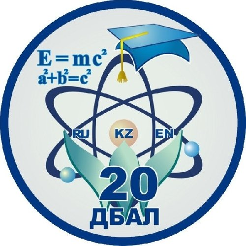
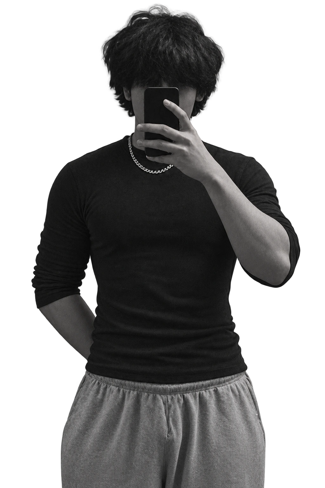
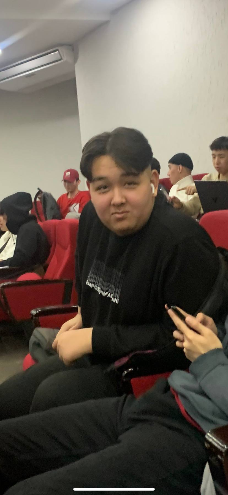

Окончил 11 классов
в 15 лет.

Лицей для
одарённых детей №20.
СЛОД №20 · Талдыкорган
ранний старт, настоящая практикаЛИЧНОЕ ПОРТФОЛИО / АЛМАТЫ
Бизнес, технологии и люди.
Соединяю их так, чтобы всё работало.

да, мне 19.Уже управлял клубами,
строил системы
и собирал команды.
В симрейсинге я отвечал за разные стороны бизнеса: от серверов и программной логики до найма, продвижения и визуального стиля. Мне интересно понимать, как устроена вся система.

СЛОД №20 · Талдыкорган
ранний старт, настоящая практикаВычислительная техника
и программное обеспечение
Между тем, что нужно бизнесу,
тем, что могут технологии,
и тем, как людям удобно работать.
«Нужно, чтобы
это заработало»
Разобраться в задаче, продумать логику и связать процессы, инструменты и данные.
Объяснить изменения, распределить роли и сделать повседневную работу удобнее.
Занимался архитектурой Telegram-бота и программой для анализа активности на игровых компьютерах. Связывал приложение, бота и базы данных.
Продумывал логику задачи: что должно происходить, какие данные нужны и в какой момент работу можно считать завершённой.
Управлял симрейсинг-клубами. Занимался наймом, делегированием, постановкой задач и сроками. Работал с финансовыми расчётами, учётом и документацией.
Мне важно видеть всю картину и понимать, что мешает работе. Внедрял изменения с учётом того, как ими будут пользоваться сотрудники.
Что нужно сделать?
Кто отвечает?
К какому сроку?
Как поймём, что готово?
Работал над брендбуком, цветовой палитрой и тем, как люди воспринимают бренд. Разрабатывал SMM-стратегию и систему бонусов, снимал и монтировал видео.
Общался с блогерами и партнёрами, договаривался о сотрудничестве. Для визуальной работы использовал After Effects, Photoshop и Canva.
Собирал и обслуживал компьютеры, настраивал сети и локальные игровые серверы. Работал с оборудованием SIMAGIC и технической документацией.
Участвовал в проекте радиоуправляемых машин: пайка, сборка и технические задачи. Помогал с поставками оборудования из Китая и общением с поставщиками.
Сборка · настройка · обслуживание
Код, визуал и AI.
Разные инструменты —
один рабочий процесс.
Монтирую видео и работаю с визуальной подачей контента. Использовал в SMM и продвижении клуба.
ЛИЧНАЯ ИСТОРИЯ
за 5 месяцев.Мой личный результат.
У меня была конкретная цель — сбросить вес. Я начал с того, чтобы разобраться, как подойти к ней осознанно.
Разбирался в питании, работе организма и психологии привычек. Искал объяснения, которые понятны мне, и собирал подход, который смогу применять в своей жизни.

Так я подхожу к сложным задачам:
сначала понимаю систему, затем действую.
Люблю видеть задачу целиком, находить разные способы решения и доводить выбранный до работающей системы. Хочу создавать полезное: проектировать, анализировать, организовывать и объяснять.
ОТКРЫТ К ПОЛНОЦЕННОЙ РАБОТЕ
Алматы · удалённо · офис · гибрид · переезд
Рабочие языки: русский, казахский, английский.